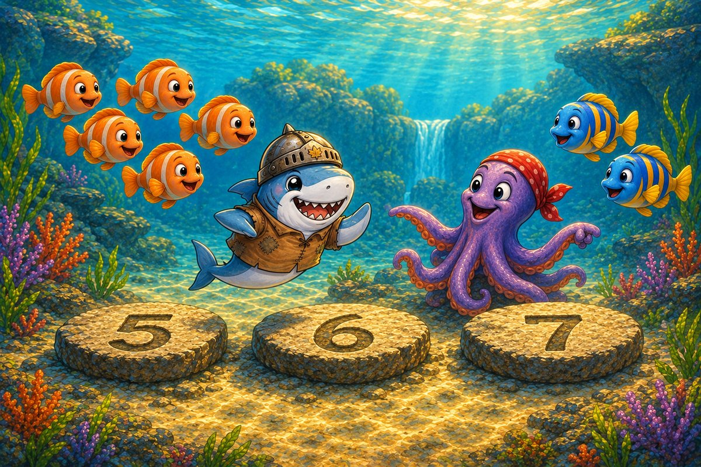
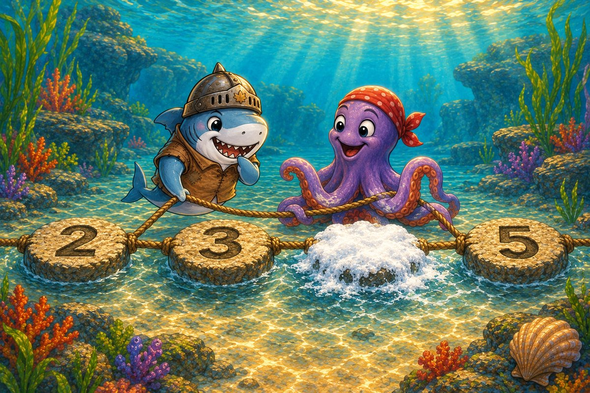
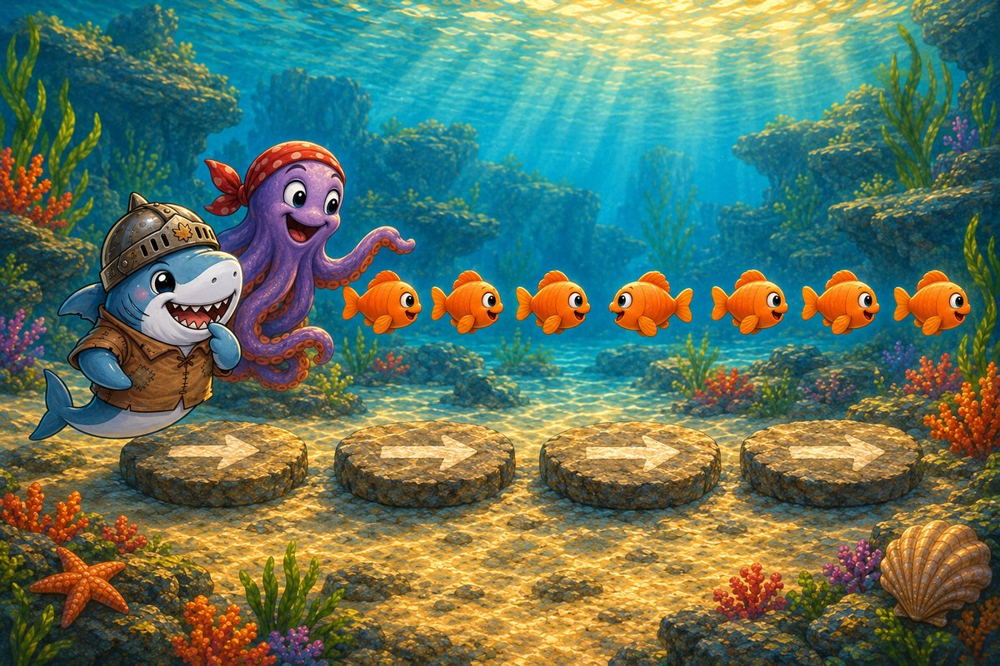
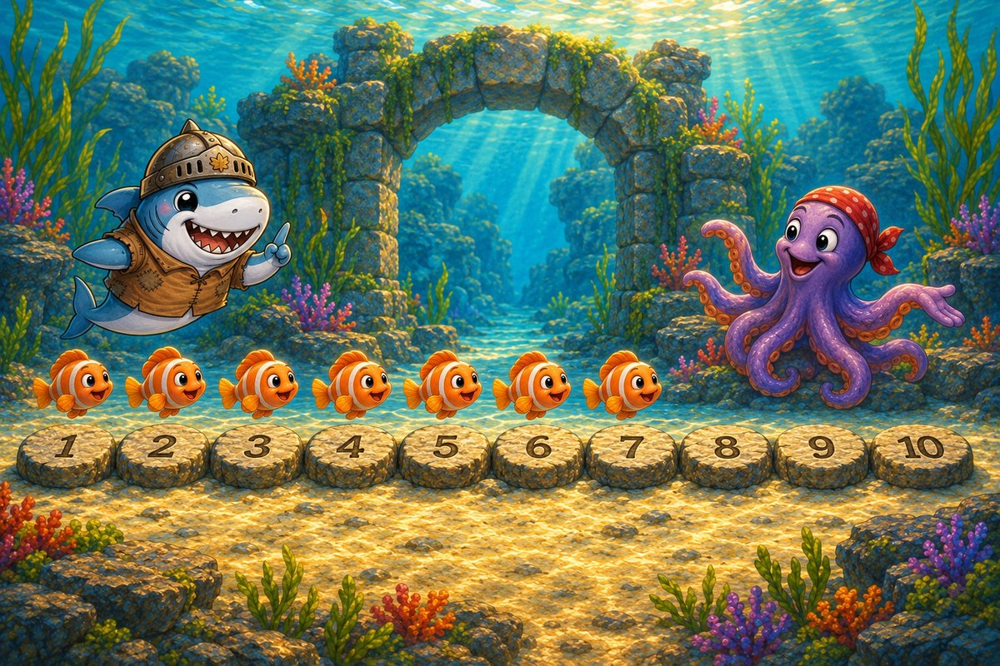
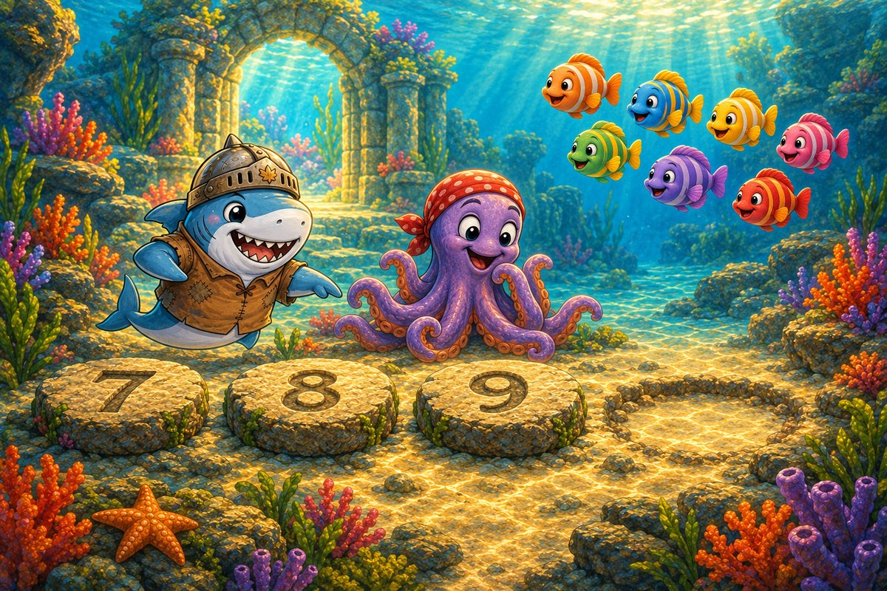

A rolling wave has scattered the lagoon stepping stones and separated a school of little fish. Cereal-Swimmer finds a trail of bubbles beside the first stone. Octo-Pop taps each bubble while they count the starting place on their watery number line.
Try it: Count the bubbles.
4
5
6
Show the answer
5. Five bubbles float by the first stone.

Page 2 of 6 · A Hop Forward
Two fish peek from behind the next stepping stones and join the group already waiting. Cereal-Swimmer starts from the number they have reached and hops forward twice. Counting on saves the friends from beginning the whole bubble trail again.
Try it: Five and two more make how many?
6
7
8
Show the answer
7. Five and two make seven.

Page 3 of 6 · The Hidden Stone
Another wave washes over the path and hides one numbered stone beneath foamy water. The stones on either side remain visible, so Octo-Pop holds the line steady while Cereal-Swimmer follows the forward sequence to identify the covered number.
Try it: Which number is missing?
3
4
6
Show the answer
4. Four belongs between three and five.

Page 4 of 6 · A School in a Tangle
The rescued fish follow arrows painted along the stones, but the school suddenly bunches into a silvery knot. Cereal-Swimmer checks which way each fish is facing. One swimmer is not following the forward direction and must turn to rejoin the line.
Try it: Which fish is out of order?
The backward fish
The first fish
The striped fish
Show the answer
The backward fish. The backward fish was breaking the direction pattern.

Page 5 of 6 · Spaces by the Gate
Seven fish reach the old lagoon gate, but its number line has more spaces to fill before it will open. Octo-Pop gathers the remaining swimmers while Cereal-Swimmer counts forward from seven to discover the missing part needed to reach ten.
Try it: Seven needs how many more to make ten?
2
3
4
Show the answer
3. Seven and three make ten.

Page 6 of 6 · The Last Number
The fish settle beside the restored stones, and the coral garden glows beyond the gate. One final space remains after seven, eight, nine. Cereal-Swimmer and Octo-Pop must name the number that completes the line and brings the whole school home.
Try it: Which number finishes the line?
9
10
11
Show the answer
10. Ten completes the lagoon line.
The end · Great counting
How can you add two to five without starting again at one?
Talk about the answer
Start at five and count two more steps: six, seven. The number line helps you keep your place.
You hopped forward, counted on, and brought every little fish safely back to the lagoon. SnackPack 123 Counting has more number stories, counting games and ten-frames.